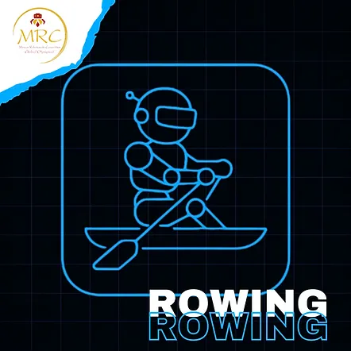
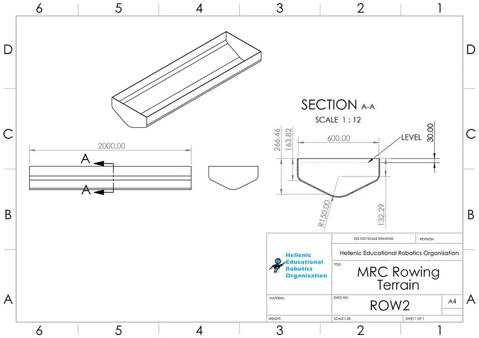
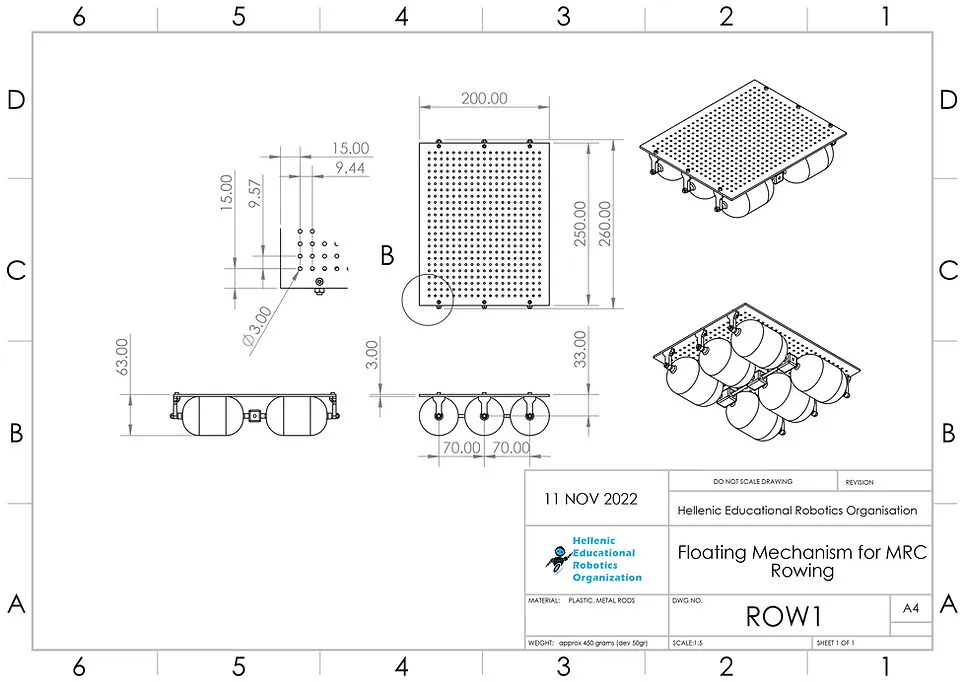

MRC ROWING (划船賽事)
希臘官方原文規則（English）中文賽事規則
划船原始內容
影片
規則內容
划船
年齡組別
兒童組 (10至12歲 / 國小)
青少年組 / 青年組 (12歲以上至18歲 / 國中及高中)
⚠️ 本項目僅設一個級別：
所有類型的機器人同場競技。
🚨 各年齡組別分別進行比賽。
⚠️ 第零條規則 – 零容忍原則與常識
在所有運動項目中，均適用第零條規則，其內容如下：
➤「如果您不確定某件事是否被允許，那麼它很可能是不被允許的。」
所有規則皆基於常識、運動精神以及所有參與者的安全。
任何蓄意曲解、違反規則本意，或試圖利用灰色地帶獲取不公平優勢的行為，將不被容忍，並可能導致隊伍被取消比賽資格。
🎯 目標
機器人划船手的目標是以最短的時間行駛 4 公尺的距離。
👥 隊伍 – 教練
- 比賽以隊伍為單位參與，而非個人。
- 每隊可由二 (2) 至三 (3) 名隊員組成。
- 每隊必須指定最多一 (1) 名機器人運動員技師。僅允許機器人運動員技師進入準備區或比賽區域。其餘隊員必須留在比賽場地內，但不得排隊等候。➤ 換言之，他們不能佔用額外位置。若隊伍未遵守此規則，將被取消資格。
- 允許隊伍在每次賽道嘗試前更換指定的技師，讓所有隊員都有機會積極參與該項目，但此非強制性。
- 所有隊員必須年滿 10 歲 (相當於國小四年級或以上)。
- 隊伍教練必須年滿 20 歲。
- 為確保比賽順利進行，教練每註冊 3 支隊伍參加比賽，就必須配備 1 名助理。
- 每隊僅允許使用一台機器人。比賽期間不得更換機器人。
- 隊伍之間不得共用同一台機器人。
- 若隊伍的機器人遇到嚴重的技術問題，經主裁判許可後，僅允許更換微控制器或電子元件。
🤖 機器人運動員 – 機器人類別
- 本競賽開放給所有機器人運動員，無論使用何種機器人套件或硬體。
- 也允許自製的機器人運動員參賽。
- 所有機器人運動員在各年齡組別中同場競技。
⚙️ 機器人運動員要求 – 規格
1. 機器人運動員必須是自主運作的。
2. 其最大尺寸必須為 20 公分 x 25 公分，重量和高度不限。
3. 為確認上述規格，機器人將被量測尺寸，並且必須能舒適地放入檢測箱中。
➤ 檢測箱尺寸為 20 公分 x 25 公分，另有正負二 (2) 公釐的公差。
4. 機器人運動員應在不施加壓力的情況下放入檢測箱。
5. 機器人運動員不得磨損或損壞賽道，或以任何方式對觀眾構成威脅。
6. 為安全起見，機器人運動員必須具備啟動和停止按鈕。
7. 機器人運動員的啟動應透過筆記型電腦或控制器進行，以避免在賽道內產生波浪。➤ 請注意，這是指按下程式的「執行」鍵，而非將其用作控制器來控制機器人運動員的移動。
8. 機器人運動員必須具有防水底座，最大尺寸為 20 公分 x 25 公分。
9. 隊伍必須確保其機器人運動員免受水的損害。
10. 主辦單位對機器人在整個比賽過程中（無論在賽道上或賽道外）可能遭受的任何損壞不承擔任何責任。
11. 機器人運動員應僅有 2 支槳，因為它旨在模擬划船運動員。每側僅可使用一 (1) 個塑膠或木製湯匙或類似物作為槳。其長度不得超過 15 公分。
12. 機器人運動員應至少有 2 個壓力感測器，一個在前方，一個在後方。
13. 無論機器人類別，僅允許使用 1 個處理器、4 個馬達和 4 個感測器。
🧪 技術檢查
- 初次技術檢查於比賽當日，在機器人運動員第一次嘗試時進行。
- 在初次檢查期間，將詢問隊伍關於機器人程式的關鍵部分。➤ 隊伍必須打開裝有機器人程式的筆記型電腦。➤ 若從回答中明顯看出隊伍不理解程式，他們將受到相當於其在該項目中所獲時間 +20% 的罰則。
- 技術檢查包括根據上述規格進行的機器人檢查。➤ 若機器人未達要求，將不允許其參賽，並自動取消其在该項目的資格。
- 初次檢查完成後，機器人運動員將被分配一個唯一的 ID 編碼。
- 若隊伍在初次技術檢查時未到場，將導致自動取消比賽資格。
- 在每次嘗試前，助理裁判也會進行二次技術檢查。
- 機器人運動員技師必須佩戴安全眼鏡。防護裝備在比賽場地上，賽前和賽中皆為強制性。防護裝備將在技術檢查期間進行檢查。
- 缺乏全部或部分防護裝備將成為隊伍被取消該項目資格的理由。
🏟️ 場地
賽道及其尺寸如下方圖片所示。

總長度 2 公尺，總寬度 60 公分

尺寸 20 公分 x 25 公分 浮動機構訂購連結
🏆 比賽
⏱️ 準備
- 負責該圈賽程的技師通過二次檢查，然後將機器人運動員放置在注滿水的划船賽道內的起點。機器人運動員應已開啟程式並處於等待狀態，一旦按下按鈕，應在五秒內啟動。
🏁 開始 – 比賽流程
1. 裁判將開始倒數 3、2、1，出發。
2. 機器人運動員應在接下來的 5 秒內啟動。
3. 若機器人在此時間內未啟動，裁判將僅給予一次重新啟動機會。這僅適用於機器人運動員的第一次嘗試。
4. 機器人運動員必須盡快移動到賽道末端，觸碰終點線後，反向返回起點。為此，它需要配備壓力感測器。未觸碰划船賽道末端的機器人運動員不得反向移動。
5. 若機器人運動員在五 (5) 秒內未開始移動，則該次嘗試視為失敗。
6. 機器人運動員（或其任何部分）不得超出賽道邊界。若發生此情況，則該次嘗試視為失敗。
7. 若機器人運動員在嘗試中被取消，裁判將記錄時間為 180 秒 (180)。
🔁 回合 – 嘗試
- 該項目的時間為 2 小時。（此時間可能根據參賽人數延長）。在此期間，每位機器人運動員將根據組委會公布的順序，在賽道上進行多次嘗試。
- 若輪到技師時其不在場，則該次嘗試視為放棄，由下一位技師遞補。➤ 錯過回合的技師必須等到所有其他嘗試完成後，才能再次輪到。
- 每次嘗試前，機器人運動員必須通過助理裁判進行的二次技術檢查。
- 裁判記錄機器人運動員每次嘗試的時間。
- 機器人運動員的隊伍有責任確保其在指定時間窗口內進行每次嘗試。
- 在嘗試之間，允許隊伍對其機器人運動員及其程式碼/演算法進行修正，➤ 但不允許進行測試。
❌ 嘗試結束
1. 當機器人觸碰反向起點區域的賽道牆壁時，計時停止。
2. 機器人應能在壓力感測器受到壓力後自行停止。
3. 若該回合超過 2 分鐘，則裁判結束該回合並宣告無效。
⚠️ 注意：
由於本項目鼓勵創造盡可能接近人體運動和體育運動動作的機器人，槳的運動必須複製划船運動員的划槳動作。運動不得是旋轉式的，而必須完全是您可以在下方影片中看到的動作。
若在技術檢查期間發現任何機器人運動員的動作未模擬下方動作，將被取消該項目的資格。
影片：
🟥 隊伍取消資格
在以下情況下，隊伍將被取消比賽資格並必須退出：➤ 隊伍的成績將不予計算，也不會出現在官方比賽排名中。
- 若機器人運動員不符合運動規則中定義的規格，且隊伍拒絕進行必要的調整。
- 若任何技師行為不當或不尊重他人，使用侮辱性語言、挑釁，或對其他參與者或裁判進行口頭（或其他方式）攻擊。
- 若發現機器人運動員並非自主運作，而是透過藍牙、Wi-Fi 或任何類似技術進行遠端控制。
✅ 允許 / ❌ 禁止
✅ 允許：
- 使用木材、塑膠、金屬、橡膠來建造槳和製作底座。
- 使用任何材料來密封機器人。
- 與電腦的無線連接（藍牙）僅用於啟動機器人。機器人啟動後，技師必須離開電腦，嘗試期間不得操作電腦。
❌ 禁止：
- 機器人運動員使用可能傷害觀眾的零件。
- 使用黏著劑來增加附著力。
- 比賽期間將機器人運動員分解成碎片。
- 用於控制移動的遠端控制。
- 使用彈性材料（橡膠、皮帶等）。推進方式必須完全是機械式的。
- 比賽期間為了無線操控機器人，而與電腦或任何其他電子設備進行無線連接（藍牙/Wi-Fi）。若發現隊伍（隊員或教練）在比賽期間無線連接並操控其機器人，將被取消該項目的資格。
- 機器人運動員技術檢查章節所列之限制。
🏆 獲勝者
每個年齡組別的前 3 名獲勝者是以最短時間完成路線的運動員。
最佳時間用於決定以下名次：
🥇 第一名 🥈 第二名 🥉 第三名
若出現平手，則考慮隊伍先前的最佳時間，依此類推。